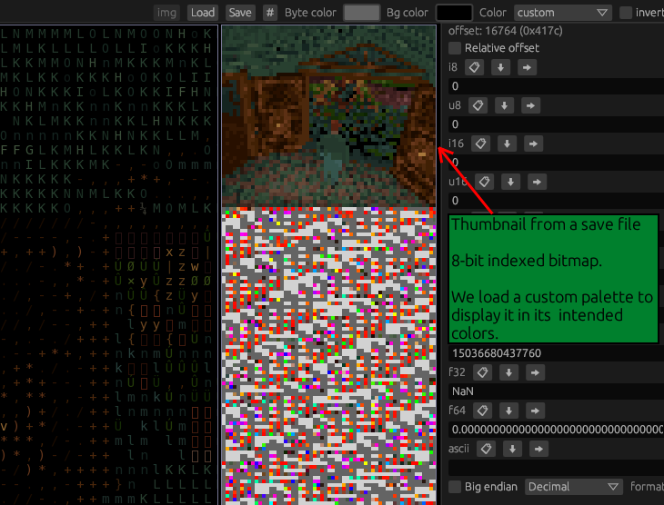
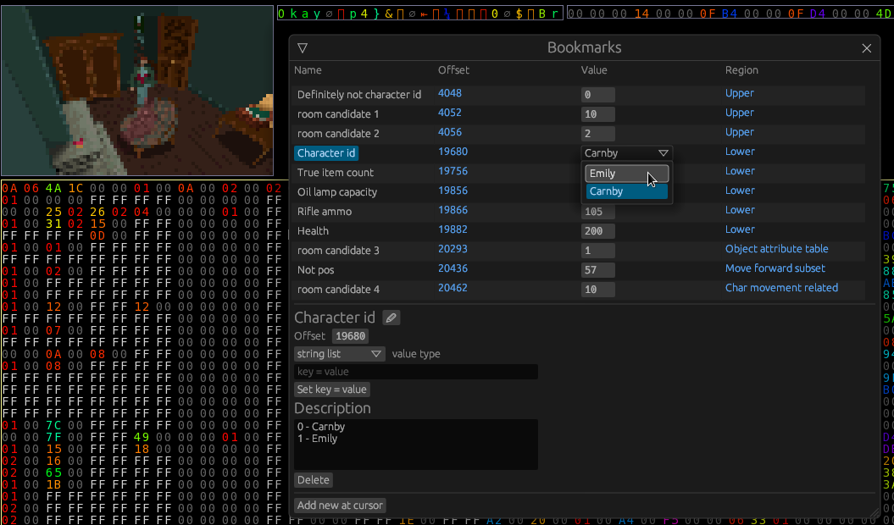

Hexerator
Hexerator is a hex editor with a unique feature set.
Its main focus is to make looking at binary files fun and easier to comprehend, but it also aims to be a good general-purpose hex editor, suitable for a wide range of uses.
Here is what it looks like:

Legend:
- = Unimplemented
- = Implemented
Features
- Colorized values
- Easy data alignment
- Built-in process memory editing
- Multiple source types (file/streamed sources)
- Rich command line options
- Bookmarks
- Multiple configurable views
- Lua scripting support for various operations, like fill.
- External command support
- Diffing functionality
- Huge file support through memory mapped files
Non-features
Features
Colorized values
Colorizing values helps a lot with human pattern recognition.

Custom color palettes
Custom color palettes can be saved and loaded, and generated through various means.

Easy data alignment
Hexerator considers it important to easily align data with shortcut keys. Proper alignment can make a lot of difference with pattern recognition.
You can see a YouTube video of it in action here:

Process Memory editing
Built-in support for opening memory of a process and viewing/editing it. Can be used to cheat in games, or discover how different applications store data in memory.
You can see a YouTube video of it in action here:

You need to run hexerator with root/admin privileges to open memory of other processes.
Multiple source types
Hexerator supports opening both files and streamed sources like standard input or character devices like /dev/urandom.
Bookmarks
Quickly and easily save and access points of interest in the data.
Additional support for setting a type for a bookmark to display and manipulate the data associated with it. 
Multiple configurable views
You can have different views into different regions of the same file, with different column counts and other configurable properties.
Lua scripting support
You can write Lua scripts to:
- Fill a selection
- Generate a custom color palette
- More coming in the future
External command support
Support for executing a custom external command on selected data.
You can see a YouTube video of it in action here:

Diffing
There is basic support for showing differences between
- The current buffer and its source file
- The current buffer and an arbitrary file
- The current metadata and the clean metadata
- Support for more coming in the future
For now diffing is pretty barebones, shown as a list of offsets. It will be better fleshed out in the future
Huge file support through memory mapped files
Huge files that couldn't fit in memory can be opened as memory mapped files through a command line option. To be implemented.
Non-features
Insertion
Insertion would complicate implementation, and for most binary data, including process memory, it will just mess up the data.
Memory holes support, generic support for huge data
Originally, I wanted to have a generic mechanism for loading only parts of files, but I found that it would make the implementation way more complex, and possibly inefficient, so I dropped the idea. Huge files will be eventually supported through memory mapped file support.
Command line API
Hexerator aims to support a wide variety of use cases, so it exposes a lot of different options.
Here is the help generated by hexerator --help:
hexerator
USAGE:
hexerator [OPTIONS] [FILE]
ARGS:
<FILE> The file to read
OPTIONS:
-h, --help Print help information
--hard-seek <HARD_SEEK> Seek to offset, consider it beginning of the file in the editor
--instance Open content in existing instance
-j <JUMP> Jump to offset on startup
--load-recent Load most recently used file
--read-only Open file as read-only, without writing privileges
--stream Specify source as a streaming source (for example, standard
streams). Sets read-only attribute
--take <TAKE> Read only this many bytes
Hexerator design document
Goals
Hexerator is a hex editor aiming to aid in pattern recognition and binary file discovery.
It also aims to be a good and versatile hex editor usable in a large amount of scenarios,
including editing /proc/id/mem and reading streaming sources, making it usable to read
piped data.
User interface
Perspective
A Perspective is a view into a Region with a specific column count.
A variable column count is very helpful for better recognizing certain patterns in data, and is one of the core features of hexerator. A Perspective on its own doesn't really do much. To make use of perspectives, there are Views.
View
A View is a region on the Viewport that provides a look into the data presented by a perspective. A view can be one of multiple kinds, like hex, ascii, block (pixel, kind of like a minimap), and it's scrollable, allowing you to explore different parts of a perspective. You can have multiple views on the Viewport. There is a focused view that you are currently focused on and scrolling/editing, etc.
By default, all views that share the same perspective sync their scroll offsets with the focused view. This behavior can be turned off if independent scrolling is desired.
Viewport
The Viewport is the area in the window where the Views are laid out.
The other things that take up space in the window are the UI panels and windows.
Concepts
BinData
The BinData is the raw binary data opened inside hex editor.
It can be opened from a file, or streamed from a streaming source, like a pipe.
Region
A Region is a slice of the BinData.
It has a start offset which determines where it begins,
and an end offset which determines where it ends.
A Region can be given a name to give it an easy to remember
identifier and also help remember what it's about.
It can also have a description which can give further useful information about it.
Meta
A Meta is all the metadata about a binary format. It can include things like Regions and Views that aid understanding
of a binary format.
Limits
To make development easier, and help keep my sanity, hexerator defines some value limits.
File size
The supported file size is min(usize, i64), which is ~4GB on 32 bit platforms,
and practically limitless on 64 bit platforms. 16 bit platforms are not supported.
Resolution and mouse position
These are i16, meaning values higher than 32767 are not supported. The minimum supported resolution is 920x620. The ui is not designed and tested for resolutions lower than that.
Block size
A block, or cell (final name not decided) is the element that displays a value.
Like a hex pair, an ascii character, etc.
The size range is 1..i16::MAX.